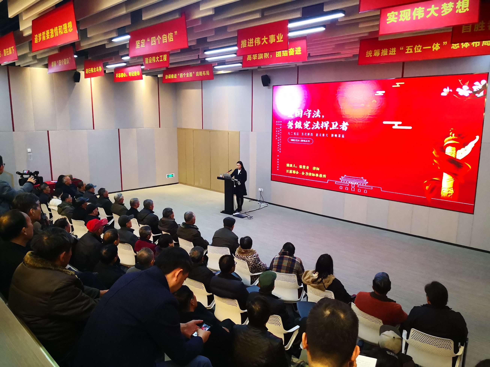

【信息发布时间：2019-12-05阅读次数：】 【我要打印】 【关闭】
12月4日下午，“追梦讲堂”第十五期讲座在市文化中心召开，本期讲座主题为《爱国守法，誓做宪法捍卫者》，由市“理论氧吧”宣讲团成员、江苏联合-合力律师事务所专职律师张紫凌主讲，我中心组织人员积极参加了本次活动。
讲座伊始，张律师从“爱国守法”主题教育切入，明确主题教育的总要求和具体目标，要学有所获，了解宪法是我国的根本大法，由此引出誓做宪法捍卫者的主题。张律师表明，要增强宪法意识，维护宪法权威，做宪法的忠实捍卫者与践行者。
一是做宪法的维护者。坚持用习近平新时代中国特色社会主义思想武装头脑，牢固树立“四个意识”，坚定“四个自信”，进一步增强法治观念，坚决维护宪法权威。
二是做宪法的捍卫者。把学习宪法作为学法计划的重中之重，弘扬宪法精神，普及宪法知识，为加强宪法实施和监督营造良好氛围，引导广大党员干部切实担负起维护宪法尊严、保证宪法实施的神圣职责。
三是做宪法的践行者。带头维护宪法权威，牢固树立法治思维，着力运用法治思维和法治方式提高深化改革、推动发展、化解矛盾、维护稳定的能力。
讲座结束后，大家纷纷表示，要始终坚持党的领导、人民当家作主、依法治国有机统一，维护宪法尊严，保障宪法实施，做宪法的坚定捍卫者忠实践行者。
